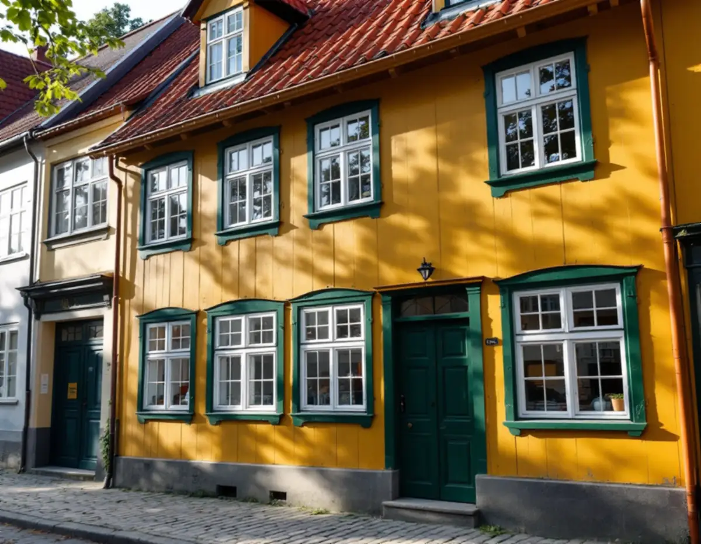
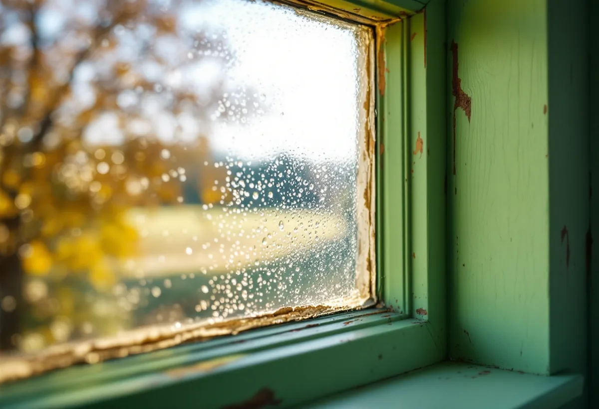

Platsbesök
Vi tittar på bågar, glas, kitt, beslag och drevning och skrapar fram äldre färglager.
Sigtunas centrala delar är riksintresse sedan 1986, och stadens bevarande- och förnyelseplan visar hur fönstrens kulörer har skiftat från 1700-talet till i dag. Geal Entreprenad AB renoverar fönster i Sigtuna stad, Märsta och resten av kommunen, med utgångspunkt i stadens bevarande- och förnyelseplan.

Bevarande- och förnyelseplanen för Sigtuna stad antogs av kommunfullmäktige den 28 november 2019 och är tungt vägledande för kommunens planarbete och bygglov. Planen konstaterar att fönster i alla tider har utformats efter rådande ideal inom arkitektur och byggnadsteknik, med olika form, proportioner, indelning, hängning, profilering, beslag och placering i fasadliv. Rådet är tydligt: ett gammalt fönster bör i första hand repareras, till exempel genom att det utsatta bottenstycket byts om det är dåligt.
Planen ställer också konkreta krav på material och detaljer. Nya fönster ska utformas som trogna kopior av de befintliga, kittet ska vara övermålningsbart, gångjärnen ska målas i fönstrens kulör och beslagen ska vara tidstypiska för husets byggnadsår, eftersom beslag från olika epoker skiljer sig mycket. Sigtuna kommun skriver att ursprungliga material och detaljer om möjligt ska bevaras, eller ersättas med samma material om de behöver bytas ut.

Glasrutorna spelar enligt planen en viktig roll för husets uttryck. De äldsta glasen är munblåsta med små blåsor och vallningar. Mellan 1915 och 1960 är de flesta glasen maskindragna med mer eller mindre synliga dragränder, och sedan 1970-talet tillverkas floatglas som är helt plant. Floatglaset ger mindre reflexer och kan uppfattas som mörka hål i fasaden.
När vi kittar om ett fönster tar vi därför vara på de gamla rutorna, och spricker en ruta letar vi i första hand efter äldre glas som ersättning. Riksantikvarieämbetet skriver att gammalt glas bör användas så långt det går vid glasning av fönster i kulturhistoriskt värdefulla hus, och att tillvarataget fönsterglas bland annat kan fås från glasmästerier. Löst kitt tas bort med ett smalt stämjärn och stor försiktighet, eftersom det finns spänningar i glaset där glasningsstiften sitter.
Planens kapitel om färgsättning bygger på arkitekten Peter von Knorrings analys av stadens fasadfärger, och där framgår att fönstrens kulör har skiftat. Gamla tvåan i kvarteret Humlegården nämns som exempel på 1700-talets färgsättning, med röd slamfärg på fasaden, ockra på fönsterspröjsen och grön umbra eller grönjord på fönsterfodren. Omkring 1870 var fönstren troligen vita eller grå, under 1880- och 1890-talen ofta mörkbruna oberoende av fasadfärgen och i 1920–1930-talens antikiserande våg gröna, olivgröna eller bruna. Under 2000-talet beskriver planen trefärgade fasader med kulörta fönsterbågar som vanligt förekommande.
För bebyggelse som tillkommit så sent som på 1950-talet rekommenderar planen traditionella material och metoder vid utvändig målning, och även för yngre hus rekommenderas oljefärg på utsatta partier, till exempel fönster. Länsstyrelsernas blad om fönster kallar linoljefärg bäst för fönster, eftersom den tränger in i träet, fäster bra på hyvlat virke och inte kräver att gamla lager som sitter fast skrapas bort. Färgen ska strykas mycket tunt, annars torkar den för långsamt. Innan vi målar skrapar vi gärna fram de äldre lagren på en båge, så att kulören kan väljas utifrån husets egen historia.
Planen påpekar att man inte behöver byta ut gamla fönster helt för att energieffektivisera. Gamla fönster med enkelglas och lösa innerbågar kan till och med ha goda energivärden, beroende på den stora mängd luft som finns mellan rutorna, och drevningen runt fönstret, som med tiden kan ha sjunkit undan, är en viktig punkt att se över. Kopplade fönster kan effektiviseras utan att fasadens uttryck förstörs, genom att glaset i innerbågen byts mot energiglas eller isolerglas.
Ett byte kan ändå bli aktuellt, till exempel där senare tiders fönster har ersatt de ursprungliga och passar dåligt till huset. Då gäller planens krav på trogna kopior, och kommunen ber om foton av fastigheten från samtliga väderstreck för att bedöma om den ligger i ett kulturhistoriskt särskilt värdefullt område. Läs om ljudglas och lov vid fönsterbyte i Sigtuna och om nya fönster i stort på sidan om fönsterbyte. Ska fasaden målas om samtidigt, se målare i Sigtuna.
Vi tittar på bågar, glas, kitt, beslag och drevning och skrapar fram äldre färglager.
Vi läser vad bevarande- och förnyelseplanen säger om ditt kvarter och hus.
Lagning, omglasning, kittning, målning och drevning redovisas för sig.
Gamla rutor sparas och fönstren kittas med övermålningsbart linoljekitt.
Linoljefärg i tunna strykningar, och gångjärnen målas i bågens kulör.
Drevningen ses över, och innerbågen kan få energiglas.
Att reparera fönster, måla dem och montera isolerglas på ett småhus ger rotavdrag enligt Skatteverket, så även ett byte av glaset i innerbågen mot isolerglas räknas som rotarbete. Solfilm och myggnät på fönster ger däremot inget avdrag.
Avdraget är 30 procent av arbetskostnaden, högst 50 000 kr per person och år och högst 75 000 kr tillsammans med rutavdrag. Glas, kitt och färg räknas som material och ger inget avdrag. Vi drar av det direkt på fakturan.
Antalet bågar, hur många rutor som behöver ersättas med äldre glas, om bottenstycken måste bytas, om beslag behöver kompletteras och om innerbågarna ska få energiglas styr priset. Efter ett kostnadsfritt platsbesök får du ett skriftligt kostnadsförslag.
Byta eller renovera fönster.
Fönsterbyte i Stockholm →Takbyte, takbesiktning och plåtarbeten.
Takläggare i Sigtuna →Sigtuna stad, Märsta och Arlanda.
Takrenovering i Sigtuna →Potten, Arlanda och gårdshusen.
Attefallshus i Sigtuna →Anmälan, fläkt och dusch i stället för badkar.
Badrumsrenovering i Sigtuna →Nytt hus, gästhus och större tomt.
Byggföretag i Sigtuna →Gatufasad, gårdsfasad och uthus i stadskärnan.
Fasadmålning i Sigtuna →Puts i stadskärnan, panel i dalgången.
Fasadrenovering i Sigtuna →Arlanda, ljudisolering och fönster i Sigtuna.
Fönsterbyte i Sigtuna →Golv på platta, fuktmätning och radon.
Golvläggare i Sigtuna →Stadskärnan, Märsta och Rosersberg.
Målare i Sigtuna →Plåttak, rännor och beslag i Sigtuna.
Plåtslagare i Sigtuna →Staket, dörrar och gårdshus i stad och dalgång.
Snickare i Sigtuna →Lov, checklista och gårdarnas tegel.
Takbyte i Sigtuna →Ny tapet i äldre trähus.
Tapetsering i Sigtuna →